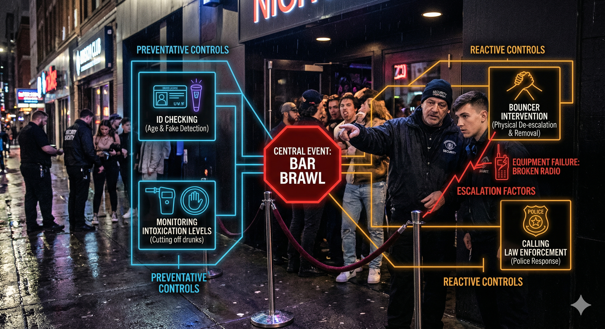

FADE IN: A neon-lit nightclub entrance. Bass thumps from inside. MARCUS (50s, built like a refrigerator, 25 years on the door) stands with arms crossed. DESHAWN (20s, fresh hire, oversized security shirt) fidgets beside him. MARCUS (scanning the line) You see that line? Every single one of them is a variable. And variables, kid, are what get people hurt. DESHAWN I just check IDs, right? MARCUS (laughs) That's like saying a pilot just pushes buttons. Nah. You and me? We're running a Bow Tie Analysis every single night. We just don't call it that.
Marcus pulls out a cocktail napkin and draws a bow tie shape — a knot in the middle with lines fanning out on both sides. MARCUS See this knot in the middle? That's the Central Event. For us, that's a bar brawl. A full-on, bottles-flying, tables-flipping disaster. DESHAWN Okay... MARCUS Everything on the LEFT side? Those are the THREATS — the things that cause the brawl. Drunk guy gets disrespected. Two crews bump into each other. Someone's prior beef walks through the door. He taps the left side of the napkin. MARCUS (CONT'D) Every one of these threats has a pathway straight to that central event. Our job is to put BARRIERS on those pathways. We call them Preventative Controls.
MARCUS Control number one: the ID check. That ain't just about age. You're reading body language. Glassy eyes? Slurred words? Aggressive posture? That's a threat indicator. You deny entry — you just blocked a pathway. DESHAWN What if they're already inside? MARCUS Control number two: the bartender cut-off protocol. Bartender sees someone at seven drinks, they signal us. We do a soft intervention — "Hey man, let me get you some water." That's a barrier between the threat and the brawl. He draws X marks across the left-side lines. MARCUS (CONT'D) Control three: capacity management. Too many bodies, too much heat, too little space — that's a threat multiplier. We keep the count. Period. DESHAWN So if all these controls work, no brawl? MARCUS In theory. But controls fail. That's the whole point of the bow tie — you plan for BOTH sides.
Marcus taps the RIGHT side of the bow tie. MARCUS Now say the brawl happens anyway. Central event fires off. These lines on the right? Those are the CONSEQUENCES. Injuries. Property damage. Lawsuits. Liquor license revoked. Someone dies. DESHAWN (swallows hard) MARCUS But just like the left side has barriers, the right side has them too. We call these Reactive Controls — or Recovery Controls. They don't prevent the brawl. They limit the damage AFTER it starts. He counts on his fingers. MARCUS (CONT'D) Reactive control one: bouncers intervene physically. Separate the fighters. Contain the zone. Reactive control two: call the cops immediately. Get EMS on standby. Reactive control three: evacuate bystanders through the side exits. Control four: preserve camera footage for legal protection.
A DRUNK PATRON stumbles past them. Marcus watches him like a hawk, then turns back. MARCUS Now here's where it gets ugly. See, every one of those controls — left side AND right side — can be degraded by what we call Escalation Factors. DESHAWN Like what? MARCUS Like this. He holds up his radio. It crackles with static. MARCUS (CONT'D) Last month, Tony's radio died mid-shift. Dead battery. He couldn't call for backup when two guys started swinging by the pool tables. By the time someone ran to get him, one guy had a broken nose and the other had a chair leg. DESHAWN Because of a dead radio? MARCUS Because of an escalation factor that degraded our reactive control. The physical intervention barrier failed because the communication system failed. One broken link in the chain and the consequence pathway opens wide.
Marcus smooths out the napkin and redraws it more carefully. MARCUS Let me lay it out clean for you. He labels each section: MARCUS (V.O.) LEFT SIDE — THREATS: • Intoxicated patron enters • Rival groups present • Prior personal conflict • Overcrowding PREVENTATIVE CONTROLS (barriers on left): • ID check + behavioral screening • Bartender cut-off protocol • Capacity management • Known troublemaker list CENTER — CENTRAL EVENT: • Bar Brawl RIGHT SIDE — CONSEQUENCES: • Physical injuries • Property damage • Legal liability • License revocation REACTIVE CONTROLS (barriers on right): • Bouncer physical intervention • Police/EMS call • Bystander evacuation • Camera footage preservation
DESHAWN So how do you know if you've got enough controls? MARCUS You assign probabilities. Say the chance of a drunk getting aggressive is 30% on a Saturday night. My ID check catches 80% of them. That means 20% slip through. So the residual probability of that threat reaching the central event is... He scribbles on the napkin. MARCUS (CONT'D) 0.30 times 0.20 equals 0.06. Six percent. Not bad. But if my ID check degrades — say I'm distracted, or short-staffed — that 80% drops to 50%. Now it's 0.30 times 0.50. Fifteen percent. More than double. DESHAWN And on the other side? MARCUS Same math. If the brawl happens and my radio works, I've got a 90% chance of containing it in under two minutes. Radio dies? That drops to 40%. The consequence pathway probability just more than doubled because of one escalation factor.
MARCUS Here's the key insight, kid. The controls have to be INDEPENDENT. If one fails, the others still hold. DESHAWN What do you mean? MARCUS If my ID check AND my bartender cut-off both depend on the same guy — say I've got one bouncer doing both — then one failure takes out two controls simultaneously. That's a common cause failure. The bow tie falls apart. He draws two X marks connected by a single line. MARCUS (CONT'D) But if the ID check is me, the cut-off is the bartender, and the capacity count is the door clicker — three independent people, three independent controls — then the probability of ALL three failing is the product of their individual failure rates. DESHAWN So like... 0.2 times 0.1 times 0.15... MARCUS (impressed) 0.003. Three in a thousand. Now you're thinking like a risk analyst.
A BLACK SUV pulls up. Four large men in matching jackets step out. Marcus straightens up. MARCUS (quietly) Watch. This is a live bow tie scenario. Four guys, same crew, already amped up. Threat pathway is active. He keys his radio. MARCUS (CONT'D) (into radio) Tony, four-top crew arriving. Possible prior history. Eyes on pool table section. Bartender — flag me at drink three for this group. (to Deshawn) I just activated three preventative controls simultaneously. Surveillance, early cut-off trigger, and zone monitoring. If any of those fail, I've still got the reactive side ready. DESHAWN And if your radio dies? MARCUS (pulls out his phone) Backup communication channel. That's how you mitigate an escalation factor — you build redundancy into the system. He winks.
The crew enters without incident. The night continues. Marcus leans against the wall. MARCUS Every night is a bow tie, kid. Threats on the left, consequences on the right, and the event we're trying to prevent sitting right in the middle. Our job isn't to eliminate risk — that's impossible. Our job is to stack enough independent barriers on both sides that the probability of a bad outcome drops to something we can live with. DESHAWN (looking at the napkin) This is... actually kind of elegant. MARCUS (smiling) ISO 31010, Section B.4.2. Bow Tie Analysis. They teach it in boardrooms with PowerPoints. We teach it on the door with cocktail napkins. He folds the napkin and hands it to Deshawn. MARCUS (CONT'D) Keep it. Study it. Because tomorrow night, YOU'RE running the left side. Deshawn looks at the napkin, then at the line of people waiting to get in. He nods. FADE OUT. — END —